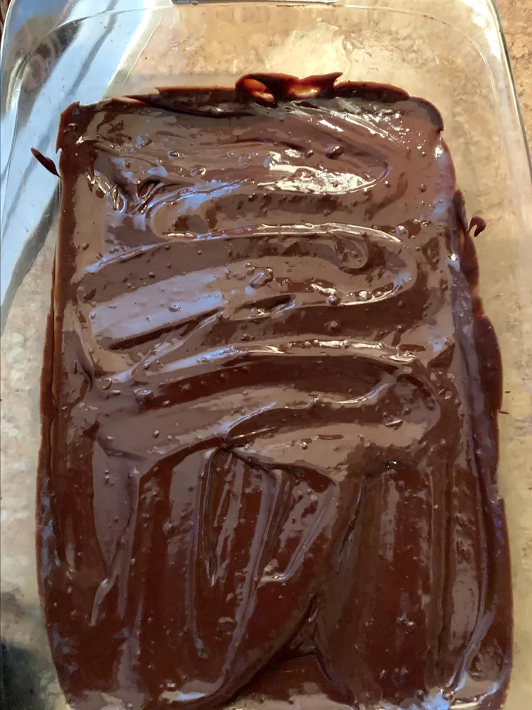

Fudge

Description
This low-calorie fudge is everything you would expect in a fudge — it's creamy and chocolaty! It's made with low-fat condensed milk which lightens up this sweet treat.
Ingrediants
- 1 1/2 cups semi-sweet chocolate chips
- 2/3 cup low-fat sweetened condensed milk
- 3/4 teaspoon vanilla extract
- 1 pinch salt
Instructions
- Combine chocolate chips and condensed milk in a medium saucepan over medium-low heat; stir gently until chips are melted. Stir in vanilla and salt, then pour mixture into an ungreased 10-inch square pan.
- Place in the refrigerator and chill until set, about 3 hours.
- Cut chilled fudge into 25 squares.